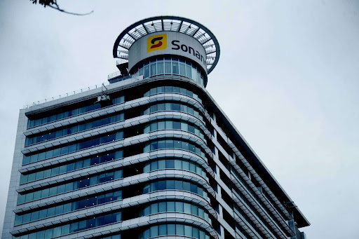

Perfil
Criada em 1976, a Sonangol - Sociedade Nacional de Combustíveis de Angola - é a concessionária exclusiva para a exploração de hidrocarbonetos líquidos e gasosos no subsolo e na plataforma continental de Angola. As suas actividades abrangem prospecção, pesquisa, desenvolvimento, comercialização, produção, armazenagem, transporte e refinação dos hidrocarbonetos e dos seus derivados e podem ser desempenhadas de forma autónoma ou em associação com empresas estrangeiras. O princípio Desde 1953, que em Angola se faz exploração de crude. Após a independência e para assumir a missão de gerir essa extraordinária riqueza, de forma a transformá-la em desenvolvimento para o povo angolano, a partir da nacionalização da Angol, foi criada a Sonangol - uma empresa com bases numa economia de mercado moderna que, com eficiência e competitividade, pudesse converter em novas oportunidades de desenvolvimento os recursos obtidos através das suas actividades petrolíferas. Com o passar dos anos, a nossa empresa cresceu e aumentou a produção do crude, o que levou Angola a tornar-se num dos maiores produtores de petróleo da África Subsaariana que exporta, regularmente, volumes significativos para países da Europa, América e Ásia. O presente A Sonangol opera com excelência em processos, qualidade nos seus serviços e produtos e consciência de que saúde e bem-estar são fundamentais para administrar uma produção de petróleo diária de altíssima qualidade. E somos um exemplo de competência e confiança, uma referência em África e no mundo, cumprindo assim a dupla tarefa de se realizar como empresa integrada e actuar como força produtora e transformadora dos recursos petrolíferos em Angola. Temos uma força de trabalho de aproximadamente 13.000 trabalhadores e contamos com a força das nossas empresas subsidiárias, de parcerias nacionais e internacionais, para transformar a maior riqueza natural de Angola em oportunidades de realização, orgulho e bem-estar social para mais de 24 milhões de angolanos. Para garantir o crescimento contínuo da organização e do país, a Sonangol concentra-se na diversificação das suas actividades.
Para a Sonangol, produzir petróleo é também uma oportunidade de valorizar o património humano e abrir caminhos para o crescimento da nação angolana. Baseada na crença de que criar valor e fazer bem são duas realidades indissociáveis, para além de gerar emprego e tecnologia, a Sonangol tem, como missão, o desenvolvimento sustentado, expresso no apoio a projectos sociais, ambientais, culturais, científicos e desportivos.
Concurso Público
A Sonangol nestes últimos anos, tem realizado Concursos Públicos pelas suas áreas de acção. Sendo os seguintes:
- Concurso de Serviços Diversos de Higiene e Limpeza pela Direcção de Administração e Infraestrutura da Sonangol EP
- Concurso Desembaraço Aduaneiro pela Distribuidora
- Concurso de Serviços Diversos de Higiene e Limpeza pela Direcção de Administração e Infraestrutura
- Concurso de Gestão Predial pela Direcção de Administração e Infraestruturas
- Concurso Gestão de Refeitórios e Fornecimemto de Refeições e Coffee Breaks pela Direcção de Responsabilidde Social Corporativa
- Concurso de Gestão Predial pela Direcção de Administração e Infraestruturas
- Concurso de Categorias Centralizadas pela Direcção Central de Logística
- Concurso Público para Empresas pela Subsidiária Pesquisa & Produção
A nossa identidade visual
Para unificar o conjunto das subsidiárias com a empresa-mãe, em 2004, o nosso Conselho de Administração instituiu uma única identidade visual que passou a ser a imagem de todo Grupo Sonangol. A marca gráfica escolhida é uma versão moderna da nossa identidade visual antiga, mantem as cores originais e, tal como a anterior, por si só identifica a nossa empresa. De fácil identificação e memorização, o logótipo da Sonangol em Angola é sinónimo de inovação e qualidade de serviço.
O Edifício Sonangol
Após anos num edifício colonial na baixa de Luanda, em 2007 mudámos a nossa sede para um novo prédio - o edifício Sonangol. Com arquitetura moderna, a nossa nova sede tem, para além de escritórios, uma galeria de exposição, refeitório, agência bancária, ginásio e garagem. Os escritórios servem como local de trabalho dos funcionários da Sonangol E.P. e de algumas subsidiárias.
Certificação
A Sonangol obteve, recentemente, a sua primeira Certificação internacional CCoE da conhecida multinacional SAP, o que proporcionará à petrolífera estatal angolana facilidade nas actualizações, downloads e instalações do Enhancement Package 5, actualização ou upgrade do Solution Manager para versão 7.1, monitorização dos ciclos ALM e ITIL e navegação em versões novas da metodologia Run SAP.